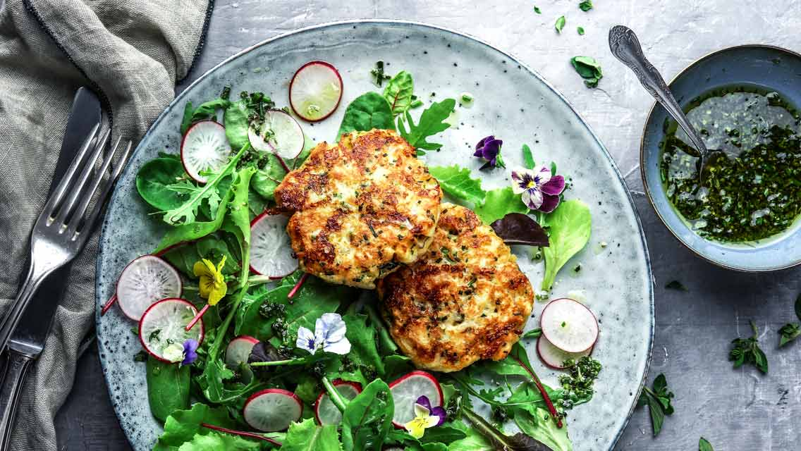

Kaspressknödel

30 Min.
simpel
22.12.2022
235 kcal
Zutaten für
| 250 | g | Toastbrot |
| 60 | g | Butter |
| 1 | Zwiebel | |
| 125 | g | Bergkäse |
| 120 | ml | Milch |
| 2 | Ei(er) | |
| 2 | EL | Mehl |
| 2 | EL | frische Petersilie |
| 2 | EL | frischer Schnittlauch |
Nährwerte für 1 Portion
Protein: 3,5 g
Kohlenhydrate: 10,8 g
Fett: 4,6 g
Zubereitung
ca. 30 Min
Fertig in ca. 45 Min
Toast in Würfelchen schneiden.
Milch erwärmen, auf die Brotwürfel gießen und 10 Minuten quellen lassen.
Zwiebeln würfeln und mit der Butter andünsten.
Käse würfeln.
Zwiebeln mit gehackten Kräutern zu den Brotwürfeln geben,
ebenso die Eier, das Mehl und den gewürfelten Käse.
Masse zu einem Teig vearbeiten.
Teig mit Salz, Pfeffer und Muskatnuss abschmecken.
Mit angefeuchteten Händen kleine Knödel formen und diese in einer Pfanne
in Butter knusprig anbraten.
Dazu schmeckt ein gemischter Salat.
Guten Appetit
Rezept erstellt von
Matthias